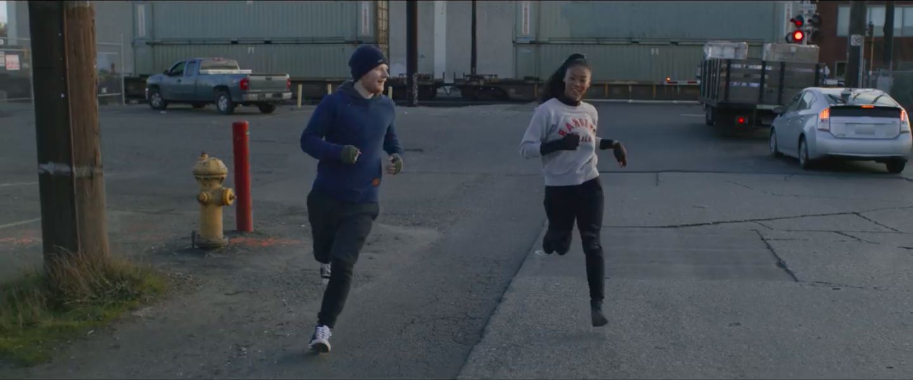

#1: Shape Of You

Shape of You è un singolo del cantautore britannico Ed Sheeran, pubblicato il 6 gennaio 2017 come
secondo estratto dal quinto album in studio ÷.
Nel 2018 il singolo ha vinto il Grammy Award alla miglior interpretazione pop solista.
Considerato il numero di riproduzioni in streaming, è il terzo singolo più venduto di sempre nel
Regno Unito con oltre 2 milioni e mezzo di copie vendute.
Descrizione
Pubblicato in contemporanea a Castle on the Hill, il brano è stato composto da Sheeran insieme a
Johnny McDaid e Steve Mac e presenta influenze tropical house, dancehall e R&B. Secondo
quanto dichiarato dal cantautore in un'intervista concessa a BBC Radio 1, il brano era stato pensato
in origine per la cantante Rihanna.
Il cantante britannico in un secondo momento ha aggiunto nei crediti ufficiali del brano depositati
presso l'ASCAP Kandi Burruss, Tameka Cottle e Kevin Briggs, autori di No Scrubs del gruppo TLC, dopo
che diversi utenti di Internet avevano riscontrato somiglianze tra No Scrubs e Shape of You,
specialmente nel pre-ritornello di quest'ultimo.
#2: One Dance
One Dance è un singolo del rapper canadese Drake, pubblicato nel 2016 ed estratto dal suo quarto
album in studio Views.
Il brano si avvale della collaborazione del cantante nigeriano afrobeat Wizkid e della cantante
britannica Kyla. Il brano utilizza un sample tratto da Do You Mind?, brano di genere UK funky del
2008 di Crazy Cousinz e Kyla. Il brano è stato prodotto da Nineteen85 e Noah "40" Shebib, e
scritto da Drake, Nineteen85, Noah "40" Shebib, Wizkid, Kyla, GRIND 6-6 ed Errol Reid. Il
singolo è stato pubblicato il 5 aprile 2016 per il download digitale e per le radio urban
statunitensi dal 12 aprile 2016.
Il singolo ha raggiunto il primo posto della classifiche di Australia, Nuova Zelanda, Canada,
Irlanda, Paesi Bassi, Stati Uniti e Regno Unito, dove è diventata la prima numera uno del rapper
come cantante autonomo. Il 15 ottobre 2016, il singolo si è aggiudicato il primato di traccia più
ascoltata in assoluto sul servizio per ascolti in streaming Spotify, con oltre un miliardo di
streaming, superando il primato detenuto da Lean On di Major Lazer e DJ Snake insieme a MØ.
Il record verrà rotto il 22 settembre 2017 da Ed Sheeran con il brano Shape of You.
#3: Closer

Closer è un singolo dei produttori EDM statunitensi Chainsmokers con la collaborazione della
cantante statunitense Halsey. Andrew Taggart, artefice dei Chainsmokers, canta con la collaborazione
della cantante nel brano. Il singolo è stato pubblicato su iTunes e Spotify il 29 luglio 2016
dalla Disruptor e dalla Columbia Records. Il brano è stato scritto da Andrew Taggart, Ashley
Frangipane, Shaun Frank, Fredic Kennett, Isaac Slade e Joe King, e prodotto dagli stessi
Chainsmokers.
Closer ha raggiunto la vetta della Billboard Hot 100 e si è imposto alla posizione numero uno nelle
classifiche di Australia, Canada, Nuova Zelanda, Regno Unito e Irlanda, divenendo sia per gli stessi
Chainsmokers che per la stessa Halsey il loro primo brano alla vetta delle classifiche dei sei
Paesi.
Il brano
Il beat elettronico del brano è stato creato in una sessione tra il membro dei Chainsmokers Andrew Taggart e Freddy Kennett dei Louis the Child.
#4: rockstar

Rockstar (stilizzato rockstar) è un singolo del rapper statunitense Post Malone, pubblicato il 15 settembre 2017 come primo estratto dal secondo album in studio Beerbongs & Bentleys.
Descrizione
Il singolo ha visto la collaborazione del rapper britannico 21 Savage. Il video del brano conta 600
milioni di visualizzazioni sul canale VEVO dell'artista.
Il brano è stato scritto da Austin Post, Shayaa Bin Abraham-Joseph, Olufunmibi Awoshiley e Louis
Bell e prodotto da Tank God in collaborazione con lo stesso Bell.
#5: Thinking Out Loud
Thinking Out Loud è un singolo del cantautore britannico Ed Sheeran, pubblicato il 7 novembre 2014
come terzo estratto dal secondo album in studio X.
Nel febbraio 2016 il singolo è stato premiato con un Grammy Award alla canzone dell'anno e con un
Grammy Award alla miglior interpretazione pop solista in occasione dei Grammy Awards 2016.
Successo commerciale
Thinking Out Loud ha raggiunto la top 10 di diverse classifiche europee e internazionali. Il
singolo ha raggiunto il primo posto della Official Singles Chart nel Regno Unito durante la
settimana dell'8 novembre 2014. Ha successivamente stabilito il record di 52 settimane
consecutive di permanenza nella top 40 britannica.
Negli Stati Uniti d'America il singolo ha raggiunto il secondo posto della Billboard Hot 100,
diventando il maggior successo di Sheeran fino alla pubblicazione di Shape of You nel 2017. È
rimasto in seconda posizione per otto settimane consecutive, tenuto distante dal primo posto solo
dalla permanenza record in vetta alla classifica del brano Uptown Funk di Mark Ronson e Bruno
Mars. Il 27 ottobre 2017 il singolo è stato certificato disco di diamante dalla RIAA per le
oltre dieci milioni di copie vendute.
#6: Lean On
Lean On è un brano musicale pubblicato da Major Lazer, il collettivo capitanato da Diplo con Jillionaire e Walshy Fire, eseguito in accoppiata con il disc jockey francese DJ Snake, reso disponibile dal 2 marzo 2015 negli store digitali. Il brano è eseguito con la collaborazione dell'artista danese MØ ed è stato pubblicato come singolo apripista estratto dall'album Peace Is the Mission, pubblicato il 1 giugno 2015.
Successo commerciale
Lean On è stato un successo commerciale globale. Negli Stati Uniti, ha debuttato nella parte
inferiore della Billboard Hot 100 ad aprile 2015. La canzone più tardi ha raggiunto la numero
quattro, restando, sino al 29 agosto, dieci settimane nella top ten. Questo brano rende a Major
Lazer e MØ la hit più famosa nel Paese. Ad oggi ha venduto oltre 4 milioni di copie solo negli Stati
Uniti.
Nel Regno Unito, il singolo ha debuttato alla numero 38 nella UK Singles Chart. Il brano è entrato
nella top ten tre settimane più tardi, prima di raggiungere il secondo posto a giugno. La canzone è
rimasta dodici settimane non consecutive nella top ten, diventando una delle poche canzoni nel corso
del 2015 a stazionare per più di dieci settimane nella top 10. Altrove, in Australia, Danimarca,
Finlandia, Ungheria, Irlanda, Nuova Zelanda e in Norvegia, il brano ha raggiunto la vetta. In Svezia
è stato un vero e proprio successo discografico: nonostante non abbia raggiunto la prima posizione,
ha venduto oltre 240.000 copie nel Paese, ottenendo la certificazione di platino per sei volte.
#7: Despacito
Il singolo ha visto la collaborazione del rapper portoricano Daddy Yankee.
Sono state registrate diverse versioni di Despacito: il 17 marzo 2017 è stata pubblicata una versione pop e una versione salsa con il musicista statunitense Victor Manuelle, il mese dopo è stata pubblicata la versione remix con il cantante canadese Justin Bieber, che ha portato il singolo originale alle classifiche mondiali, in particolare nel mondo britannico e statunitense. Il 5 maggio 2017 è stata registrata una versione elettronica prodotta dal trio statunitense Major Lazer e dal colombiano DJ MOSKA e una versione urban prodotta dal DJ Sky.
La canzone ha raggiunto il record di One Sweet Day di Mariah Carey e dei Boyz II Men, essendo stata al primo posto nella classifica americana per 16 settimane consecutive e venendo battuto solo nel 2019 dalla canzone Old Town Road.
Il singolo è stato scritto da Luis Fonsi ed Erika Ender ed è stato prodotto da Andrés Torres e Mauricio Rengifo. Il singolo nel suo genere è un misto tra il pop latino e il reggaeton ed è composto in tonalità di si minore.
Al momento della pubblicazione, Despacito ha ricevuto recensioni generalmente favorevoli da parte dei critici musicali, che hanno elogiato la fusione tra ritmi latini e urbani, il suo carattere accattivante e la sua pittura testuale. Ha vinto il Latin Grammy Awards come Disco dell'anno, Miglior canzone di musica urbana/Performance e Miglior video musicale breve al 18º Grammy Latin. La versione remix ha ricevuto tre nomination ai Grammy Awards come Record dell'anno, Canzone dell'anno e migliore duo pop ai Grammy Awards 2017. Nel 2017, Despacito è stato classificato il quinto miglior brano latino di tutti i tempi da Billboard ed è stato posizionato tra i primi dieci brani dell'anno da Time, Billboard e Rolling Stone.
#8: Love Yourself
Descrizione
La canzone è stata scritta dallo stesso Bieber insieme a Ed Sheeran e Benjamin Levin, mentre la produzione del brano è stata affidata a quest'ultimo.
Video musicale
Il videoclip del brano è stato pubblicato su YouTube il 14 dicembre 2015. Il video ritrae una coppia, marito e moglie, che si svegliano e iniziano a ballare dentro la loro casa; la clip si conclude con la donna che si sveglia e trova un biglietto accanto a lei con scritto "Love Yourself".
#9: Sorry
Sorry è un singolo del cantante canadese Justin Bieber, pubblicato il 23 ottobre 2015 come secondo estratto dal quarto album in studio Purpose.
Descrizione e accuse di plagio
In occasione di un'intervista concessa al The Ellen Show, Bieber ha spiegato che il testo del brano
è una dedica rivolta alla ex-compagna Selena Gomez.
Nel maggio 2016 la cantante White Hinterland ha citato in causa Bieber e il produttore Skrillex
riguardo un possibile plagio nei confronti del suo brano Ring the Bell, inciso due anni prima.
Secondo Hinterland, i due artisti avrebbero campionato l'hook iniziale del brano senza chiedere i
diritti d'autore e rifiutando un iniziale dialogo privato. Bieber e Skrillex si sono difesi da tutte
le accuse, postando su Twitter un video filmato durante la registrazione di Sorry per dimostrare che
l'opera era interamente realizzata da loro. Successivamente nel dicembre 2017 Hinterland ha
annunciato a TMZ.com di aver presentato una richiesta di archiviazione sul caso in quanto le due
parti avrebbero raggiunto un accordo.
#10: Don’t Let Me Down
Don't Let Me Down è un brano del gruppo di produttori statunitensi The Chainsmokers pubblicato per il download digitale dal 5 febbraio 2016. Il brano è eseguito con la collaborazione della cantante statunitense Daya. Il brano è stato scritto dagli stessi Chainsmokers insieme a Emily Warren e Scott Harris e ha venduto oltre 420,000 download in Australia, diventando sei volte disco di platino.
Il gruppo
I The Chainsmokers sono un duo musicale statunitense composto dai DJ e produttori Andrew Taggart e Alex Pall.Sono giunti alla notorietà nel 2014, grazie al successo ottenuto con il singolo #Selfie. In seguito hanno raggiunto le vette delle classifiche mondiali con i successivi singoli Roses, Don't Let Me Down e Closer, quest'ultimo inciso con Halsey e che ha mantenuto la prima posizione della Billboard Hot 100 per dodici settimane.